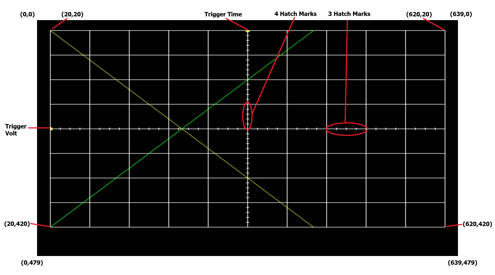
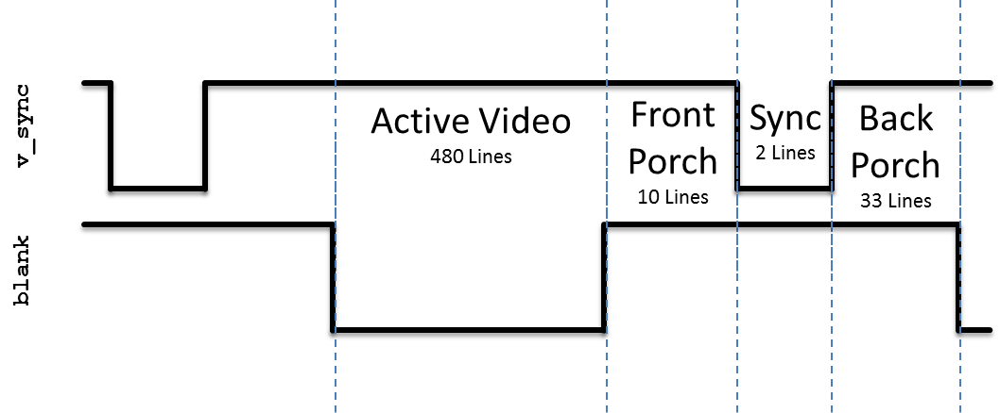
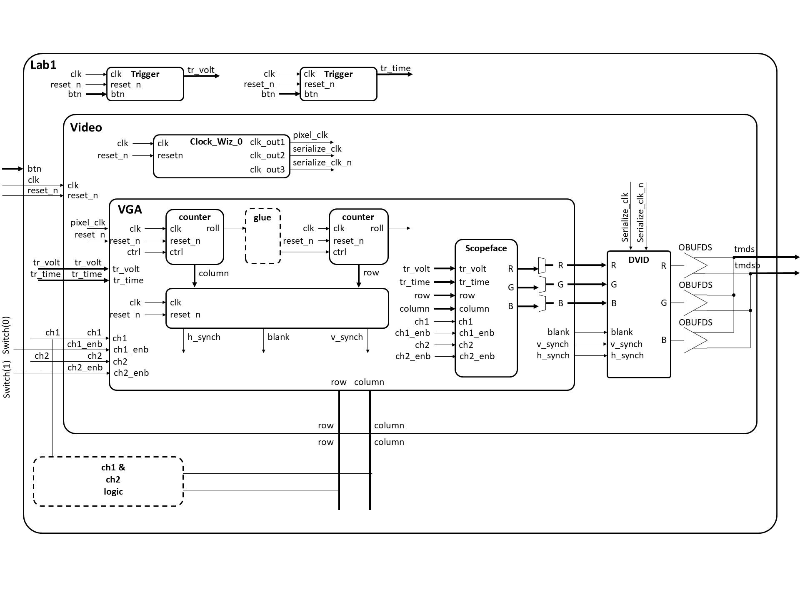
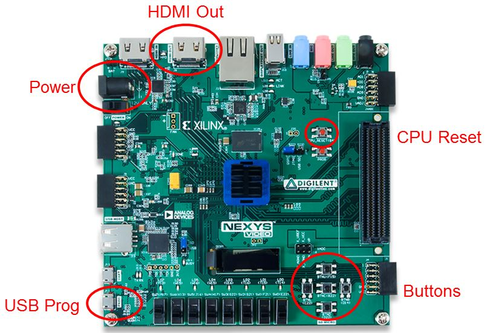

🔬 Lab 1: VGA Synchronization#
📌 Objectives#
Students should be able to generate a time-critical signal, VGA.
📜 Synopsis#
In this lab, you will write a VGA controller in VHDL and implement it on your FPGA development board. You will be provided a VGA-to-HDMI module that will automatically format your output for the HDMI output port on your development board. This VGA controller will be tasked to generate the display portion of an oscilloscope as shown in the figure below. The scope face consists of a white grid, used to measure the signals, two trigger markers, and the waveforms. The grid shall contain 11 vertical lines and 9 horizontal lines. In this lab, the waveforms will be artificially generated by your code, but in later labs, the waveforms will be generated by incoming audio waveforms.
{kind=link}
🧮 Procedure#
💻 VGA Overview#
Video Graphics Array (VGA) is an interface protocol used to transmit analog video data to a screen. The VGA protocol uses a scanning method to project an image on the screen. Starting in the top-left of the screen, the monitor will progressively move from left to right, top to bottom to display each pixel. The following signals must be sent to a VGA monitor in order to display an image.
red,green,blue- three separate analog voltage signals indicating the amount of each color to display in the current pixel. These signals are sometimes abbreviated as RGB.h_sync- Horizontal synchronization signal that tells the screen to start writing pixels to the next linev_sync- Vertical synchronization signal that tells the screen that the current video frame is completed. The screen then starts writing pixels to the top-left of the screen.
Both synchronization signals contain four unique states: active_video, front_porch, sync_pulse, and back_porch. Incoming pixel data (through the RGB channels) is only displayed during the active_video state of the synchronization signals.
Internally, you will use a 25MHz clock as your pixel_clk. On the rising edge of this clock, when both the h_sync and v_sync signals are in the active_video state, you will place the RGB values you want the screen to display for that pixel. During all other states, the RGB values must be “0”.
{kind=link}
Figure 1: The h_sync signal contains four states. Pixel data is only displayed on the monitor during the active_video state. During all other state, the RGB values must be “0”.
The v_sync signal looks nearly identical to the h_sync signal, however it is significantly stretched out in time. Where the h_sync signal was counted in terms of pixel_clk, the v_sync signal is counted based on iterations of the h_sync signal. For example, in Figure 2, the active_video portion is active for 480 complete iterations of the h_sync signal.
{kind=link}
Figure 2: The v_sync signal is similar to h_sync, but instead of counting based on pixel_clk, the states are based on the number of iterations of the h_sync signal. Pixel data is only displayed on the monitor during the active_video state. During all other state, the RGB values must be “0”.
More details on the VGA protocol can be found at http://www-mtl.mit.edu/Courses/6.111/labkit/vga.shtml. This link provides the exact numbers needed to generate the correct timing pulse signals for any VGA resolution. And this youtube video illustrates how the old CRT works: How a TV Works in Slow Motion - The Slow Mo Guys .
VHDL Code#
In order to get you going in this lab, some of the VHDL code has been provided for you. In most cases, you should refrain from changing the modules given. In order to get a better understanding how these modules interact with one another, the following sections provides a schematic and the input, output and behavior of some of the modules.
lab1.vhdl
lab1.xdc
video.vhdl
vga_tb.vhdl
dvid.vhdl
tdms.vhdl
scopeface.vhd
All this code is in this ZIP file: Lab01_cadet_code.zip
Project Setup
Architecture#
The design of Lab 1 is broken down into separate modules, some of which are provided for you and some which you will need to create. The interconnection of the modules is illustrated in the following schematic. When a signal name appears just inside a box, that should should correspond to the name of that signal in the entity description. Please note there are a few omissions in the diagram that you should correct as part of your documentation (see Turn-In section).
{kind=link}
There are two modules which will constitute the majority of your work, VGA and scopeFace. The following two subsections details the behavior of these two modules.
The VGA module#
Your main task is to build the VGA component for Lab1. This component sweeps across the display from left to right, and then return to the left side of the next lower row. The VGA interface determines the color of each pixel on this journey with the help of the scopeFace component.
entity vga is
Port( clk: in STD_LOGIC;
reset_n : in STD_LOGIC;
h_sync : out STD_LOGIC;
v_sync : out STD_LOGIC;
blank : out STD_LOGIC;
r: out STD_LOGIC_VECTOR(7 downto 0);
g: out STD_LOGIC_VECTOR(7 downto 0);
b: out STD_LOGIC_VECTOR(7 downto 0);
trigger_time: in unsigned(9 downto 0);
trigger_volt: in unsigned (9 downto 0);
row: out unsigned(9 downto 0);
column: out unsigned(9 downto 0);
ch1: in std_logic;
ch1_enb: in std_logic;
ch2: in std_logic;
ch2_enb: in std_logic);
end vga;
Signal |
Description |
|---|---|
|
This is the 25MHz pixel clock generated by the DCM in the video module. |
|
This is the same active high reset signal passed into the top level Lab1 module. |
|
This is a 10-bit unsigned value representing the trigger voltage. This value is passed to the scopeFace module so that a yellow arrow (see Trigger Level Marker in the screen show) on the vertical axis. |
|
This is a 10-bit unsigned value representing the trigger time. This value is passed to the scopeFace module so that a yellow arrow (see Trigger Time Marker in the screen show) on the horizontal axis. |
|
This 1-bit signal signals the VGA module to draw the channel 1 signal on the scope for this row, column pixel. When the value is 1, draw a yellow pixel on the display at the current row,column position. When 0, do not draw a pixel. |
|
This 1-bit signal enable the ch1 signal to be drawn. |
|
This 1-bit signal signals the VGA module to draw the channel 2 signal on the scope for this row,column pixel. When the value is 1, draw a green pixel on the display at the current row, column position. When 0, do not draw a pixel. |
|
This 1-bit signal enable the ch2 signal to be drawn. |
|
The 8-bit red intensity for this row,column pixel on the screen. |
|
The 8-bit green intensity for this row,column pixel on the screen. |
|
The 8-bit blue intensity for this row,column pixel on the screen. |
|
The current row being drawn on the display. |
|
The current row being drawn on the display. |
|
The blank signal for the current row,column position. Its the logical OR of the h_blank and v_blank signals. |
|
The h_synch signal for the current row,column position. |
|
The v_synch signal for the current row,column position. |
The ScopeFace module#
Inside the VGA module sits an instance of the scopeFace entity. This entity only contains combinational logic. When given a row,column pair, its responsible for generating the R,G,B value of that pixel.
entity scopeFace is
Port ( row : in unsigned(9 downto 0);
column : in unsigned(9 downto 0);
trigger_volt: in unsigned (9 downto 0);
trigger_time: in unsigned (9 downto 0);
r : out std_logic_vector(7 downto 0);
g : out std_logic_vector(7 downto 0);
b : out std_logic_vector(7 downto 0);
ch1: in std_logic;
ch1_enb: in std_logic;
ch2: in std_logic;
ch2_enb: in std_logic);
end scopeFace;
Signal |
Description |
|---|---|
|
The current row being processed on the display. |
|
The current column being processed on the display. |
|
A 10-bit unsigned value representing the trigger voltage. This value is used to display a yellow arrow (Trigger Level Marker) on the vertical axis. |
|
A 10-bit unsigned value representing the trigger time. This value is used to display a yellow arrow (Trigger Time Marker) on the horizontal axis. |
|
The 8-bit red intensity for the current row, column pixel on the screen. |
|
The 8-bit green intensity for the current row, column pixel on the screen. |
|
The 8-bit blue intensity for the current row, column pixel on the screen. |
|
A 1-bit signal indicating whether to draw the channel 1 signal on the scope for the current row, column pixel. When the value is 1, draw a yellow pixel; when 0, do not draw a pixel. |
|
A 1-bit signal enabling the channel 1 signal to be drawn. |
|
A 1-bit signal indicating whether to draw the channel 2 signal on the scope for the current row, column pixel. When the value is 1, draw a green pixel; when 0, do not draw a pixel. |
|
A 1-bit signal enabling the channel 2 signal to be drawn. |
Connecting#
Your Digilent board will have a lot of connections required to make this lab work. The image below shows how I made these connections to get the lab to work.
{kind=link}
🚚 Deliverables#
Gate Check 1#
[5 Points]
By end of day on Lesson 7, you must have finished setting up the VGA counters to generate the proper rows and columns on the waveform. This can be shown with waveform screenshots from the VGA testbench showing the h count rolling over causing the v count to increment. Be sure to also show both max counts. You must implement the two counters similar to the method implemented for the counters in Homework 4.
Show both the row and column max counts rolling over back to zero
Place all screenshots in a single document and upload it to GradeScope.
Push your code to your GitHub repository using git with the tag
Lab1_GC1
Gate Check 2#
[5 Points]
By end of day on Lesson 8, you must have setup the appropriate v_synch, v_blank, h_synch, and h_blank signals on the waveform and created the scopeFace module to draw at least one line on the display. Include picture of the line on the display and associated .bit file for the scopeFace module proof. Additionally, include screenshots of waveforms showing:
Show the h_synch going high, low, and high in relation to column count.
Show the v_synch going high, low, and high in relation to row count AND column count.
Show the blank signals going high, low, and high in relation to column count and row count.
Push your code to your GitHub repository using git with the tag
Lab1_GC2Demo can be live to your instructor or an image uploaded to GitHub.
Required Functionality#
[35 Points]
For Required Functionality your code must generate the white oscilloscope grid pattern shown in the Figure above and draw the two channels of traces. To test this draw:
The channel 1 trace (yellow) along a diagonal where (row = column).
The channel 2 trace (green) should be drawn along a diagonal where (row = 440-column).
Switch(0) should be able to enable and disable channel 1
Switch(1) should be able to enable and disable channel 2
This test code should be placed in the Lab1 entity.
You need to draw the channel 1 trace (yellow) along a diagonal where (row = column). The channel 2 trace (green) should be drawn along a diagonal where (row = 440-column). This test code should be placed in the Lab1 entity (not in scopeface). This means you have some logic in the Lab1 entity that uses the column coming out of the Video component to provide an input row value for each channel.
Demo can be live to your instructor or a video uploaded to Teams.
Push your code to your repository using git with the tag
Lab1_ReqdFunc
A Functionality#
[15 Points]
Demo to the instructor your live program with the o’scope grid pattern generated on the monitor, ch1 with a yellow diagonal line and ch2 with a green diagonal line. Demo the ability to enable and disable ch1 and ch2 with switches. See figure above.
A-level functionality is shown in the figure in the Lab Overview section at the top of the page. In addition to drawing the display, the display must update when one of the buttons is pressed according to the list below.
Pressing the upper directional button (BTNU) once should move the Trigger Level Marker up.
Pressing the lower directional button (BTND) once should move the Trigger Level Marker down.
Pressing the left directional button (BTNL) once should move the Trigger Time Marker left.
Pressing the right directional button (BTNR) once should move the Trigger Time Marker right.
In order to achieve this level of functionality, you will need to implement the two trigger components in the Lab1 schematic. These buttons do not need to be “debounced.” However, if you debounce your buttons properly you can earn 3 bonus points.
Demo can be live to your instructor or a video uploaded to Teams.
Push your code to your repository using git with the tag
Lab1_AFunc
README#
[25 Points]
All your work in this lab is to be uploaded to GitHub and you will make submission in Gradescope to record the time each milestone is completed. The main part of the lab is your README, documenting your design. The README should be in markdown in the Lab1 folder so it displays when viewing the folder on github.com.
Your README must include the following:
Introduction - Provide a brief overview of the problem.
Design/Implementation - Include your diagrams from HW5. Provide the block-diagram of your solution using the signal names in your code. The block diagram given above is somewhat incomplete, make sure to include corrections to this diagram. An editable block diagram PPT is provided here. For each module that you built, explain its overall purpose, inputs, outputs, and behavior. You do not need to include code in this report (instead put all your vhdl files (code and testbench), wcfg file, and bit files in GitHub). Tip: How to add images to your README
Test/Debug - Briefly describe the methods used to verify system functionality (such as products from gate check 1 and 2).
Show at least three excerpts from your testbench for the VGA module (as screen shots):
Show the h_synch going high, low, and high in relation to column count.
Show the v_synch going high, low, and high in relation to row count AND column count.
Show the blank signals going high, low, and high in relation to column count and row count.
Show the column count rolling over causing the row count to increment and max counts for both counters.
List the major problems you encountered and how you fixed them. This should cover all the problems you encountered in the lab and how you fixed them. Break each problem and solution into separate paragraphs.
Results - This section should clearly state for each milestone/functionality the date/time it was achieved, level of achievement (e.g, achieved, partially-achieved, not achieved), what was achieved, and evidence you proved it worked (e.g., via demo or images/videos). We no longer use the printed lab cutsheets signed by your instructor as you meet each milestone, but instead have you make a submission in Gradescope for each milestone.
Conclusion - Explain what your learned from this lab and what changes you would recommend in future years to this lab or the lectures leading up to this lab.
Coding Practices#
[5 Points] Use of Git and GitHub
[10 Points] Code style. Your code should be readable, concise, and well-organized. Points will be deducted for code that is difficult to understand and maintain. Write your code as if someone else is going to have to update it.
Warning
Keep an eye on individual gate check turn in dates. The final turn in of all products (code, demos, and README) is end of day on Lesson 9.